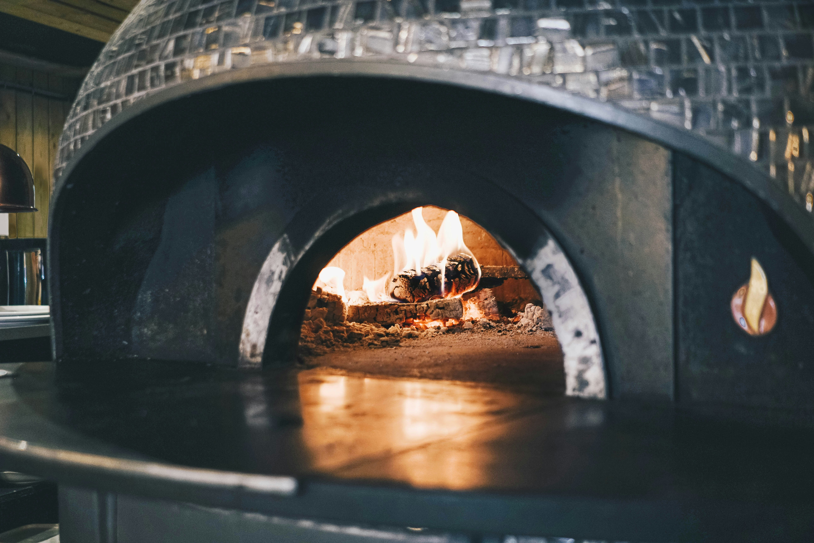
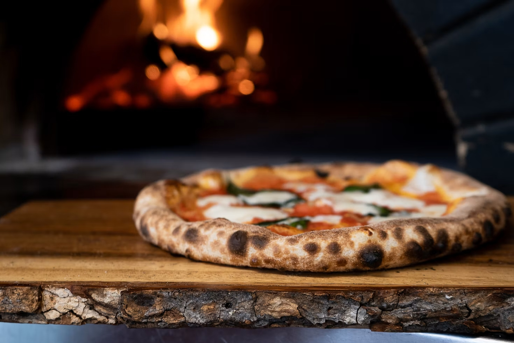
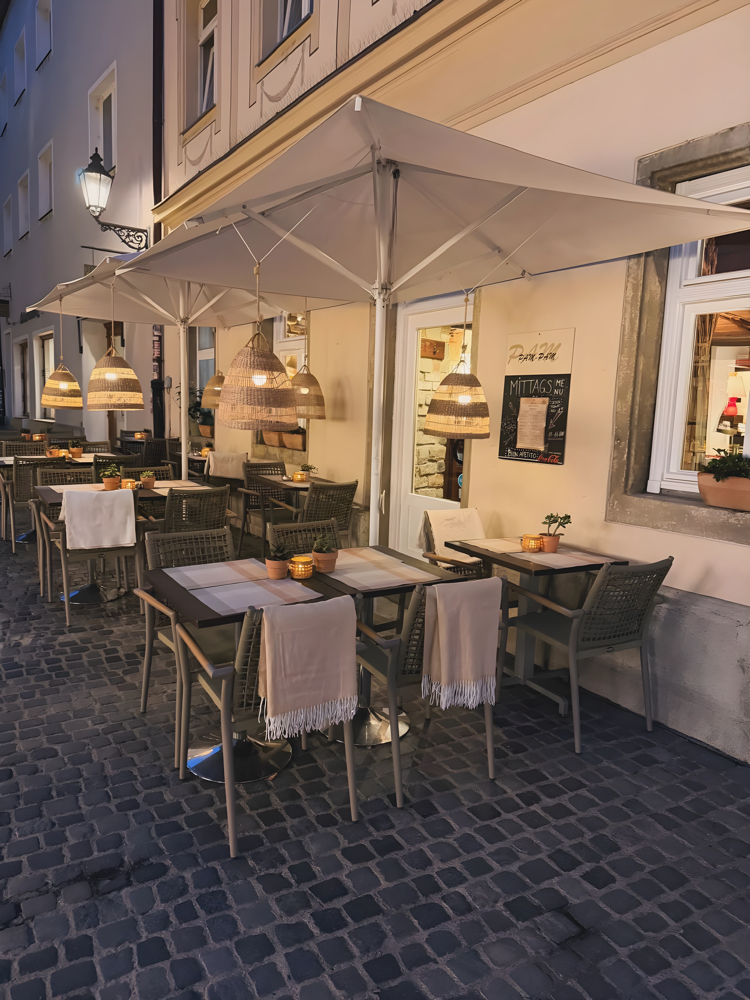
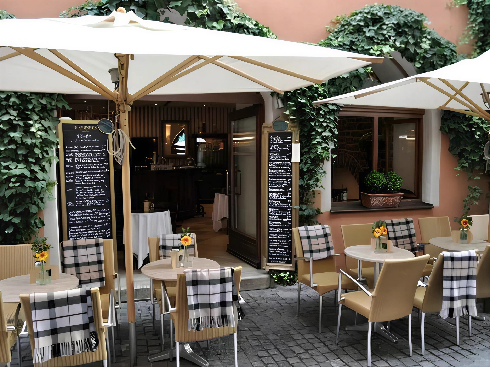
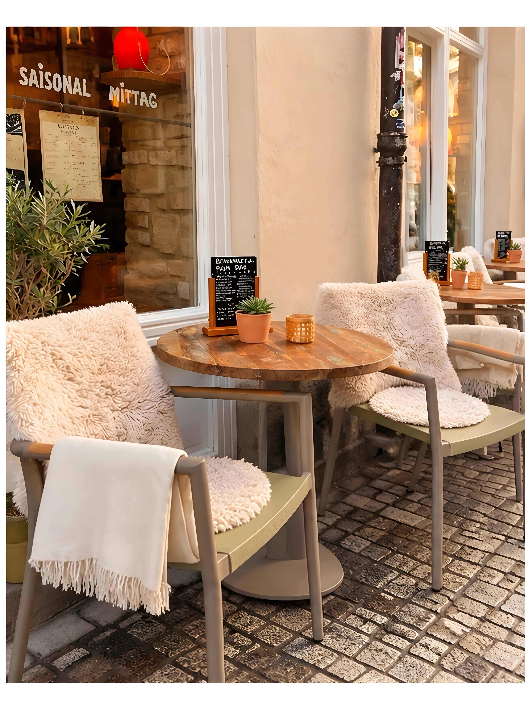

Unsere Vision
Wir bewahren unseren traditionellen Geschmack und verbinden ihn mit neuen Ideen, Kreationen und Aromen.

Erlebt die traditionsreiche Gastfreundschaft und italienische Lebensfreude im Herzen von Regensburg.

Wir verwenden hochwertige, möglichst regionale Zutaten und bereiten alles mit viel Leidenschaft und Kreativität frisch zu. Dabei stehen Qualität, guter Geschmack und das gemeinsame Genießen im Mittelpunkt.
Unser Teig reift mindestens 48 Stunden und wird bei hoher Hitze im Steinofen gebacken: außen knusprig, innen luftig.



Genießt mediterranes Flair mitten in Regensburg. Ob gemütlich am Römling oder mit Blick auf das lebendige Treiben am Haidplatz – bei uns findet jeder seinen Lieblingsplatz für gutes Essen und entspannte Drinks.
Erste Holzofen-Pizzeria Regensburgs
Hausgemachter Sauerteig-Pizzateig
Familiengeführt mit Herz & Tradition
Wir bewahren unseren traditionellen Geschmack und verbinden ihn mit neuen Ideen, Kreationen und Aromen.
Unsere Leidenschaft sind glückliche Gäste, ein starkes Team und gemeinsame Erinnerungen.
Seit 1971 ist das Pam Pam ein Familienbetrieb mit italienischer Tradition. Als erste Holzofen-Pizzeria Regensburgs wurde es von unserem Großonkel Odero eröffnet. Über Generationen hinweg wurde die Leidenschaft für gutes Essen und italienische Gastfreundschaft weitergegeben.
2002 holte unser Vater Clementino das Restaurant zurück in die Familie und führte es nach einer umfangreichen Renovierung im traditionellen Stil weiter. Seit Januar 2025 führen wir das Pam Pam nun in dritter Generation gemeinsam als Familie fort – mit dem Ziel, unsere Geschichte und Tradition zu bewahren und gleichzeitig neue Kapitel zu schreiben.
Bitte ruf uns direkt an: 0941 / 561371. Wir nehmen Reservierungen NUR telefonisch an 🙏 wir bitten um Verständnis!
Wir kommen nicht mit der Beantwortung der Mails hinterher bei Reservierungen, telefonisch sind wir schneller :)
Wir freuen uns auf euch!
il vostro Team del Pam Pam